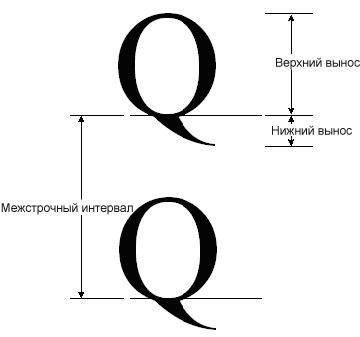
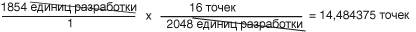

Практическое руководство. Получение метрик шрифтов
FontFamily Класс предоставляет следующие методы для получения различных метрик для определенного семейства/style сочетания:
GetEmHeight(FontStyle)
GetCellAscent(FontStyle)
GetCellDescent(FontStyle)
GetLineSpacing(FontStyle)
Между номерами, возвращаемыми этими методами, в единицах измерения конструктора, поэтому они не зависят от размера и единиц измерения конкретного Font объекта.
На следующем рисунке различные метрики.

Пример
В следующем примере отображается метрики для семейства шрифтов Arial обычного стиля. Код также создает Font объект (в зависимости от семейства шрифтов Arial) с размером 16 пикселей и отображаются метрики (в пикселях) для этой конкретной Font объекта.
Ниже показан результат выполнения примера кода.

Обратите внимание, первые две строки выходных данных на предыдущем рисунке. Font Объект возвращает размер 16 и FontFamily объект возвращает em, равный 2048. Эти два числа (16 и 2048 бит) являются основой для преобразования между единицах измерения конструктора и единиц (в данном случае это пиксели) Font объекта.
Например можно преобразовать единицах измерения конструктора верхнего выносного элемента в пиксели следующим образом:

Следующий код располагает текст по вертикали, задав Y данными-членом PointF объекта. Координата по оси y будет увеличена путем font.Height для каждой новой строки текста. Height Свойство Font объект возвращает межстрочный интервал (в пикселях) для этой конкретной Font объекта. В данном случае возвращаемое значение Height равно 19. Обратите внимание на то, что это то же самое, как число (округленный в целое число), получаемому при преобразовании метрики межстрочного интервала в пикселях.
Обратите внимание на то, что (также называемый размер эм) не равен сумме Восхождение и спуск. Сумма размеров верхнего и спуск называется высота ячейки. Высота ячейки минус внутренней начальные равно высоту максимального пробела. Высота ячейки, а также внешнее межстрочное расстояние равно междустрочного интервала.
string infoString = ""; // enough space for one line of output
int ascent; // font family ascent in design units
float ascentPixel; // ascent converted to pixels
int descent; // font family descent in design units
float descentPixel; // descent converted to pixels
int lineSpacing; // font family line spacing in design units
float lineSpacingPixel; // line spacing converted to pixels
FontFamily fontFamily = new FontFamily("Arial");
Font font = new Font(
fontFamily,
16, FontStyle.Regular,
GraphicsUnit.Pixel);
PointF pointF = new PointF(10, 10);
SolidBrush solidBrush = new SolidBrush(Color.Black);
// Display the font size in pixels.
infoString = "font.Size returns " + font.Size + ".";
e.Graphics.DrawString(infoString, font, solidBrush, pointF);
// Move down one line.
pointF.Y += font.Height;
// Display the font family em height in design units.
infoString = "fontFamily.GetEmHeight() returns " +
fontFamily.GetEmHeight(FontStyle.Regular) + ".";
e.Graphics.DrawString(infoString, font, solidBrush, pointF);
// Move down two lines.
pointF.Y += 2 * font.Height;
// Display the ascent in design units and pixels.
ascent = fontFamily.GetCellAscent(FontStyle.Regular);
// 14.484375 = 16.0 * 1854 / 2048
ascentPixel =
font.Size * ascent / fontFamily.GetEmHeight(FontStyle.Regular);
infoString = "The ascent is " + ascent + " design units, " + ascentPixel +
" pixels.";
e.Graphics.DrawString(infoString, font, solidBrush, pointF);
// Move down one line.
pointF.Y += font.Height;
// Display the descent in design units and pixels.
descent = fontFamily.GetCellDescent(FontStyle.Regular);
// 3.390625 = 16.0 * 434 / 2048
descentPixel =
font.Size * descent / fontFamily.GetEmHeight(FontStyle.Regular);
infoString = "The descent is " + descent + " design units, " +
descentPixel + " pixels.";
e.Graphics.DrawString(infoString, font, solidBrush, pointF);
// Move down one line.
pointF.Y += font.Height;
// Display the line spacing in design units and pixels.
lineSpacing = fontFamily.GetLineSpacing(FontStyle.Regular);
// 18.398438 = 16.0 * 2355 / 2048
lineSpacingPixel =
font.Size * lineSpacing / fontFamily.GetEmHeight(FontStyle.Regular);
infoString = "The line spacing is " + lineSpacing + " design units, " +
lineSpacingPixel + " pixels.";
e.Graphics.DrawString(infoString, font, solidBrush, pointF);
Компиляция кода
Предыдущий пример предназначен для работы с Windows Forms и требует PaintEventArgs e, который является параметром PaintEventHandler.